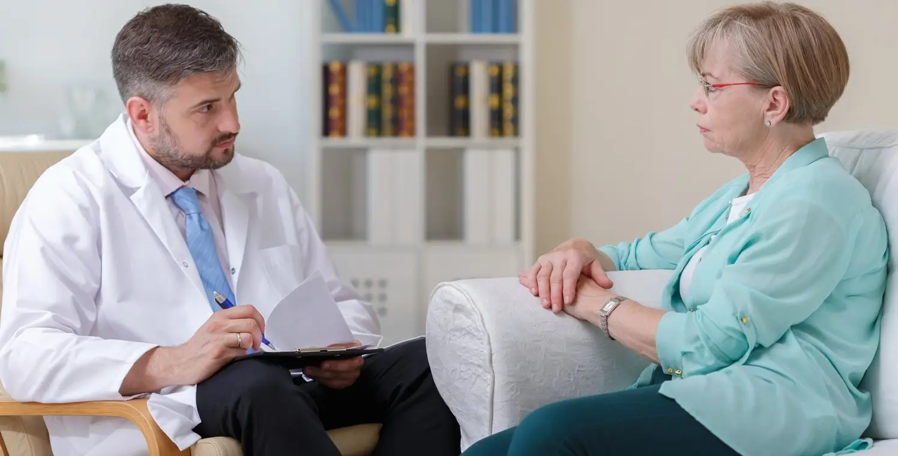
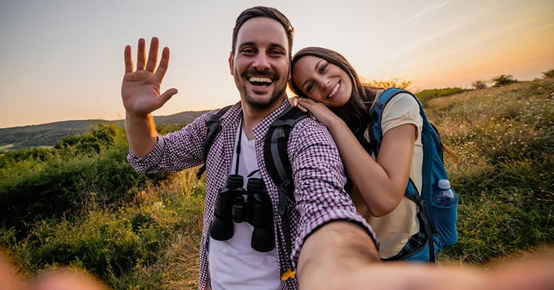

ОСИГУРЯВАНЕ НА ОСНОВНИ ЖИЗНЕНИ ПОТРЕБНОСТИ:Ежедневието на настанените стари хора в дома се организира според предварително изготвени заедно с тях общи правила. Осигурява се постоянна грижа за всеки, в зависимост от потребностите му и съобразно неговото мнение и избор. Питателна и здравословна храна, която се приготвя в кухнята на комплекса, се поднася четири пъти на ден в приятна атмосфера. Менюто е съобразено с възрастовите и диетични нужди на настанените. |
|
ГРИЖИ ЗА ЗДРАВЕТОНа всеки настанен в дома за възрастни хора е осигурен достъп до здравна профилактика, здравни грижи и услуги, лечение и рехабилитация, както и съдействие за получаване на медицинска и стоматологична помощ. Комплексът предлага и СПА процедури в изградения за тези нужди модерен център. Те се осъществяват при лекарско разрешение и съобразно желанието на настанените в дома. |
|
|  |
ПСИХОЛОГИЧЕСКА ПОДКРЕПАПсихологическата подкрепа се реализира чрез консултиране и различни терапевтични дейности, чрез индивидуални сесии или групова работа, съобразно индивидуалните потребности на настанените възрастни хора в дома. Усилията са насочени към възстановяване и поддържане на психическото здраве и равновесие. |
|  |
ИНФОРМИРАНОСТ, ОТДИХ И СВОБОДНО ВРЕМЕДомът за възрастни хора „Планински рай“ осигурява условия за включване на ползвателите в разнообразни дейности, занимания и инициативи, съобразно индивидуалните им интереси и желания. Предвидени са занимания – карти, табла, шах и др., които ще се осъществяват в подходящи за това помещения. Центърът осигурява възможност за постоянна връзка с роднините на настанените. Планираните посещения и отбелязването на лични празници ще се осъществяват в просторния ресторант на „Планински рай“. |